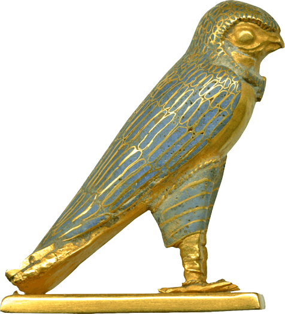
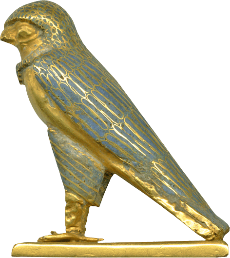

Who Protects the Earth with His Wings
resources
Ancient Egypt Online
The Myth of Horus at Edfu: I by H.W. Fairman in The Journal of Egyptian Archaeology, Vol. 21, No. 1, Sept. 1935
The Myth of Horus at Edfu: II. C. The Triumph of Horus over His Enemies: A Sacred Drama by A.M. Blackman and H.W. Fairman in The Journal of Egyptian Archaeology, Vol. 28, Dec. 1942
modern hymns & devotional writing
Hymn to Horus the Elder by godsofsandandwater
Heru-Wer by justtherightmix
Adoration of Horus (the elder) by starsandepithets
Works by antlering 1 |
2 |
3
Works by hesy-bes (aka mery-set-re) 1 |
2
Works by ofspeckledplumage 1 |
2 |
3
Works from deactivated blogs 1 |
2 |
3
Lord of the Horizon: A Devotional in Honor of Horus

other e-shrines
credits
 
current offerings from pixelins
most images credited on my mythology graphics page